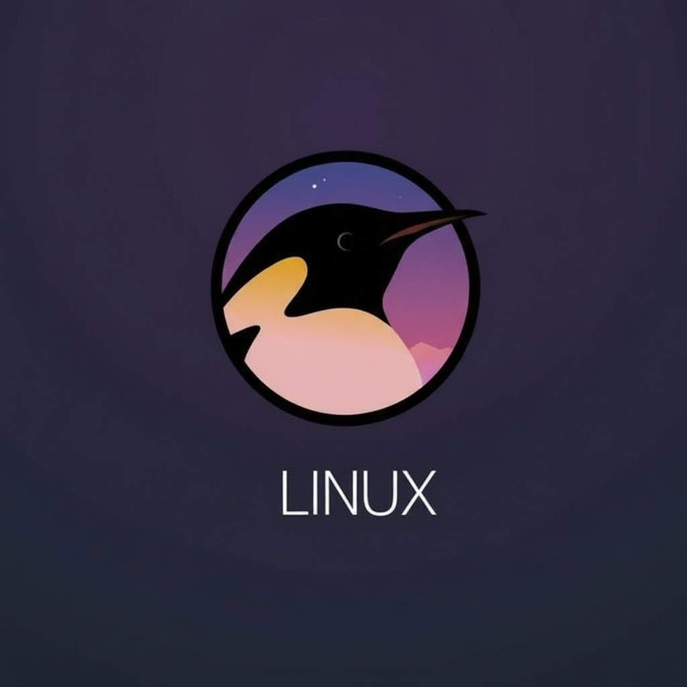

Domina la terminal, gestión de usuarios, archivos y permisos. Una base sólida y esencial en sistemas operativos de código abierto ideales para futuros desarrolladores y administradores de sistemas.
